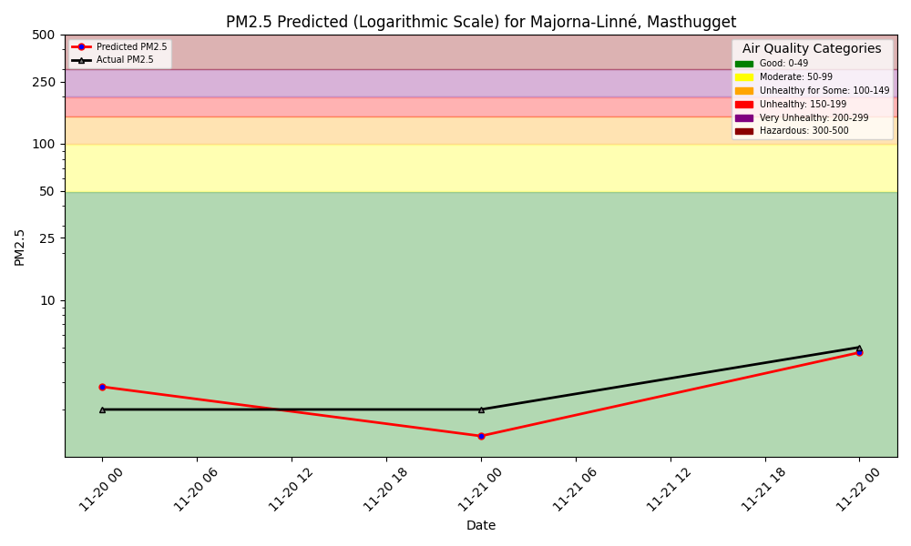

PM2.5 forecast

Performance monitoring of our model
1-Day hindcast: Predictions vs outcomes
What is PM2.5?
PM2.5 refers to fine particulate matter in the air that measures 2.5 micrometers or smaller in diameter. For comparison, these particles are about 30 times smaller than the diameter of a human hair. Because of their small size, PM2.5 particles can penetrate deep into the lungs and even enter the bloodstream, posing significant health risks.
Exposure to PM2.5 can lead to:
- Respiratory and cardiovascular issues
- Aggravation of asthma and bronchitis
- Reduced lung function and lung diseases
- Increased risk of heart attacks and strokes
- Premature death in people with preexisting health conditions
Future improvements
A future improvement could be interacting with the air quality ML system using language (text or voice), powered by a function-calling LLM.